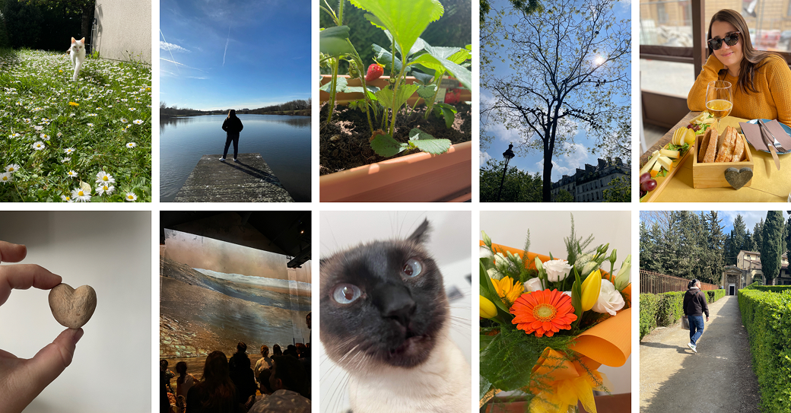

Je suis devenue Product Designer parce que ce métier transforme les frictions du quotidien en opportunités. Là où d'autres voient un problème, je vois une réponse à imaginer et un bénéfice concret à créer pour l'utilisateur.
Ma double formation en Product Design et Stratégie Digitale, adossée à mon parcours en Sciences Humaines et Sociales, me donne une perspective particulière sur les projets centrés utilisateur : je m'intéresse autant aux comportements et aux besoins qu'à la solution elle-même.
J'ai aussi une sensibilité forte pour les causes environnementales et animales, et mon ambition est d'aligner progressivement ma carrière sur ces engagements.
Télécharger mon CVEmpathie
Avant de concevoir, je prends le temps de comprendre les utilisateurs : leurs objectifs, leurs frustrations et leur contexte.
Intention
Chaque choix de conception a une raison d'être. Je relie les choix visuels aux besoins des utilisateurs et aux objectifs de l'entreprise.
Curiosité
La première idée est rarement la meilleure. Je considère les feedbacks, les tests et les itérations comme des étapes naturelles du processus.
